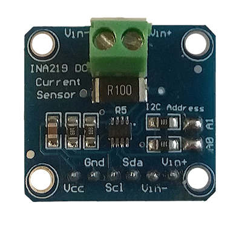

|
Power Monitor 1.3.0
Power Consumption Monitor
|
|
Power Monitor 1.3.0
Power Consumption Monitor
|
The INA219 is a current shunt and power monitor with an I2C- or SMBUS-compatible interface. The device monitors both shunt voltage drop and bus supply voltage, with programmable conversion times and filtering. A programmable calibration value, combined with an internal multiplier, enables direct readouts of current in amperes. An additional multiplying register calculates power in watts. The I2C- or SMBUS-compatible interface features 16 programmable addresses.
Key features are listed below, hardware details can be found into datasheet:

AgroTechLab (Laboratório de Desenvolvimento de Tecnologias para o Agronegócio)
IFSC (Instituto Federal de Santa Catarina) - Câmpus Lages
Rua Heitor Vila Lobos, 225 - São Francisco
Lages/SC - Brazil
CEP: 88.506-400